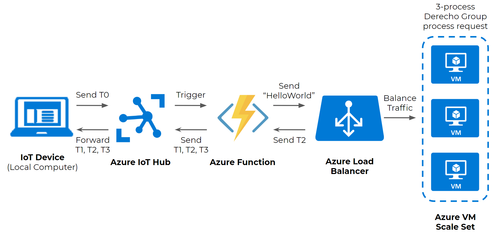
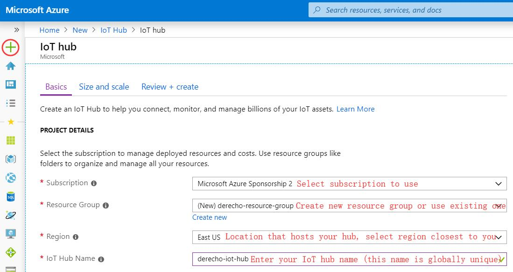

Tutorial - Create an Azure IoT Service
using the Derecho library
2019-06-02 · 45 minutes to read · Xitang Zhao
Overview
Derecho is a library that helps you build replicated, fault-tolerant services in a datacenter with RDMA networking. This tutorial shows a step by step walkthrough of setting up a simple Azure IoT Service that uses Derecho library. This tutorial contains 3 main sections:

At the completion of this tutorial, you will set up your local computer as an IoT device. Whenever you execute the “device_to_cloud.cs” source code. Your local computer (the IoT device) would timestamp its start time T0 and send T0 to the Azure IoT Hub. Whenever it receives any data from the IoT device, the IoT hub auto-triggers and runs an Azure Function. The function first timestamps its start time T1 and send a “HelloWorld” message to an Azure Load Balancer via TCP. The load balancer simply redirects traffic to a VM inside the Azure Virtual Machine Scale Set. One of the process of the 3-process Derecho group running inside the scale set would timestamps T2 when it receives the request and sends back T2 to the Azure Function. The Azure Function timestamps T3 when it hears back, and sends T1, T2, T3 back to the IoT device.
Section 1 - Set up an IoT device that
sends data to an IoT hub (D2C)
Part A - Create an IoT hub
Before you can send any data to the IoT hub, you need to first create your IoT hub. Below is a list of steps to create an IoT hub on the Azure portal.
- Log in to the Azure portal: https://portal.azure.com/
- Click the green + icon on the left to “Create a resource”, then Search the Marketplace by typing “IoT Hub”
- Select “IoT Hub” and click the “Create” button. Fill in the fields
- Click “Next: Size and scale”
- Choose “F1:Free tier” in Pricing and scale tier to avoid paying for testing purpose (Free tier allows 500 devices to be connected to the IoT hub and up to 8,000 messages per day)
- Click “Review + create”. Then click “Create”. Creating an IoT hub takes a few minutes
Part B - Register an IoT device
An IoT device must be registered with your IoT hub before it can connect. Below is a list of steps to register an IoT device on the Azure portal.
- Log in to the Azure portal: https://portal.azure.com/
- Type “IoT Hub” on the “Search resources, services, and docs” search bar on top and select “IoT Hub”
- Select the IoT Hub you just created
- Click “IoT devices”
- Click “+ Add“ to create a device
- Enter the Device ID, for example, “my-device”.
- Click “Save”
- Choose “my-device” or the device you just created
- Click the “Copy to clipboard” icon for the Connection string (primary key) and save it somewhere locally to be used next. The format of the IoT device connection string looks like this: HostName={Your_IoT_Hub_Name}.azure-devices.net;DeviceId=MyNodeDevice;SharedAccessKey={Your_Device_Shared_Access_Key}
Part C - Register an IoT device
Once the IoT hub is created and the IoT device is registered, you can use your local computer to act as an IoT device and send data to the IoT hub. Below is a list of steps to send data from IoT device to IoT hub (D2C - Device to Cloud) using your local machine.
- Install Git on your local machine if you haven’t: https://www.atlassian.com/git/tutorials/install-git#windows. Git will be used to download the source code that send datas from IoT device to IoT hub
- In the local terminal window (or Windows Powershell), run
dotnet --versionto check the version of your .NET Core SDK. Since the source code is written in C#. You need the .NET Core SDK 2.1.0 or greater on your development machine. You can download the .NET Core SDK for multiple platforms from .NET: https://dotnet.microsoft.com/download/archives - In the local terminal window, run “git clone https://github.com/xitanggg/Azure-IoT-Service-using-Derecho.git” to download the source code
- In the local terminal window, run
cd Azure-IoT-Service-using-Derecho/device_to_cloudto change your directory to the “device_to_cloud” directory - Open the “device_to_cloud.cs” file and paste the IoT device connection string you saved earlier on line xxx. Save the file
- In the local terminal window, run
dotnet restoreto install the required packages for device_to_cloud - In the local terminal window, run
dotnet runto build and run device_to_cloud

Natoque Vitae

Dolor Penatibus
Section 2: Set up an IoTHubTrigger Azure function
Part A - Create an IoT Hub Trigger Azure function that prints data received
You have set up your local computer as an IoT device to send data to the IoT hub. Now you will create an Azure function that will run and print out the received data whenever the IoT Hub receives data from the IoT device. Below is a list of steps to create IoT Hub Trigger function on the Azure portal.
- Log in to the Azure portal: https://portal.azure.com/
- Type “Function App” on the “Search resources, services, and docs” search bar on top and select “Function App”
- Select Function app settings
- Runtime version choose ~1
- Click the blue + icon next to Functions to create a new function for the Function App
- Scroll down and click IoT Hub
a
Section 3: Set up a Virtual Machines Scale Set to host Derecho application
a